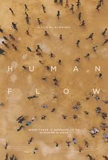
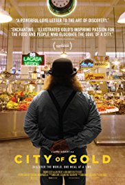
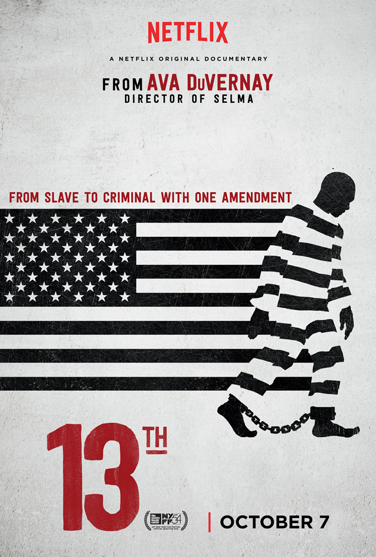

Human Flow

Platform: Amazon Prime
Rotten Tomatoes Score: 91%
Rating: PG-13
Watch the trailer here
Synopsis:Artist, activist and director Ai Weiwei captures the global refugee
crisis--the greatest human displacement since World War II--in this breathtakingly epic film
journey Human Flow.
City of Gold

Platform:Hulu
Rotten Tomatoes Score: 91%
Rating:R-Language
Watch the trailer here
Synopsis:In this richly penetrating documentary odyssey, Pulitzer Prize-winning food critic
Jonathan Gold shows us a Los Angeles where ethnic cooking is a kaleidoscopic portal to the mysteries of an
unwieldy city and the soul of America. Combing through colorful neighborhoods in his green pickup truck,
Gold is sniffing out his next strip-mall discovery-whether Oaxacan grasshopper soup, hand-cut tonkotsu ramen,
or a particularly unctuous pad see ew. As piping-hot platters are served up, so are stories of immigrants whose
secret family recipes are like sacred offerings pledged for the opportunity to build their American Dream. With
eternal curiosity, razor-sharp intellect, and existential longing, Gold is a culinary geographer taking us where
no critic has gone before.
Thirteenth

Platform:Netflix
Rotten Tomatoes Score: 96%
Rating:Not Rated
Watch the trailer here
Synopsis:In this richly penetrating documentary odyssey, Pulitzer Prize-winning food critic
The title of Ava DuVernay's extraordinary and galvanizing documentary refers to the 13th Amendment to the Constitution,
which reads "Neither slavery nor involuntary servitude, except as a punishment for crime whereof the party shall have been
duly convicted, shall exist within the United States." The progression from that second qualifying clause to the horrors of
mass criminalization and the sprawling American prison industry is laid out by DuVernay with bracing lucidity. With a potent
mixture of archival footage and testimony from a dazzling array of activists, politicians, historians, and formerly incarcerated
women and men, DuVernay creates a work of grand historical synthesis.